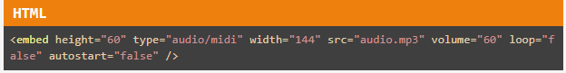
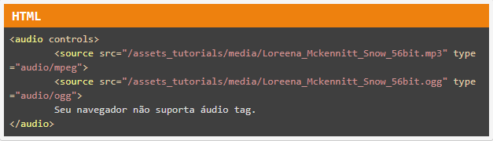
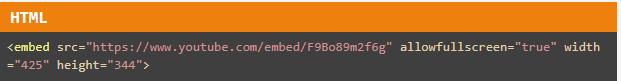

Inserindo Áudios e Vídeos em sua página HTML
ÁUDIOSElemento <embed>"O <embed> , apesar de ser usado na prática desde a época do browser Netscape, não era um elemento oficial das especificações do HTML 4 e XHTML . No HTML 5, seu uso é regulamentado e ele passa a fazer parte da especificação da linguagem. Sua função também é adicionar um conteúdo externo que necessite de um plugin para ser exibido pelo browser."  |
Elemento <audio>"Com a introdução de HTML5 tags de áudio se espalharam rapidamente e são suportadas pelos navegadores atuais. Tags de áudio são usadas para adicionar sons e música na página HTML. No momento a tag audio suporta três tipos de arquivos de áudio: mp3 - MIME-type audio/mpeg wav - MIME-type audio/wav ogg - MIME-type audio/ogg"  |
VÍDEOSInserindo um vídeo do Youtube usando tag <iframe> |